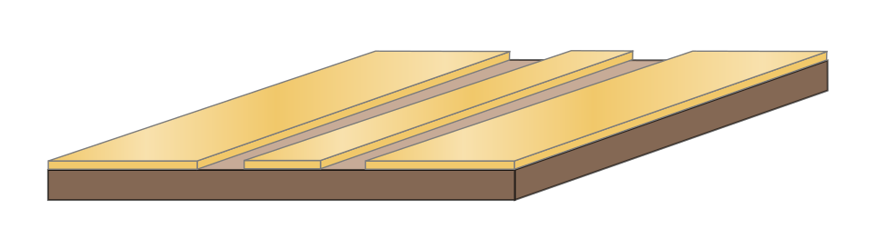
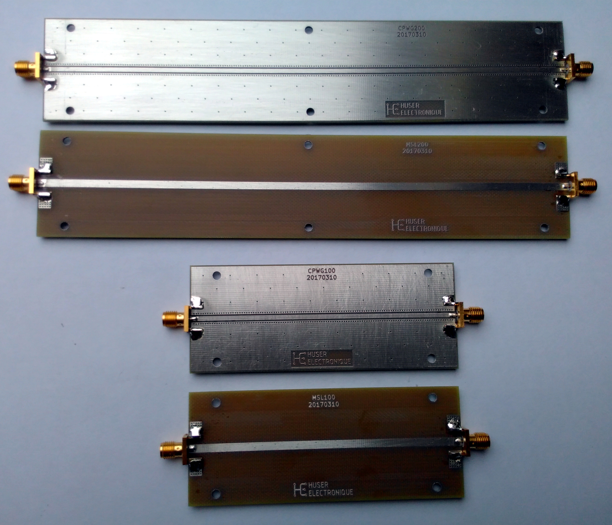
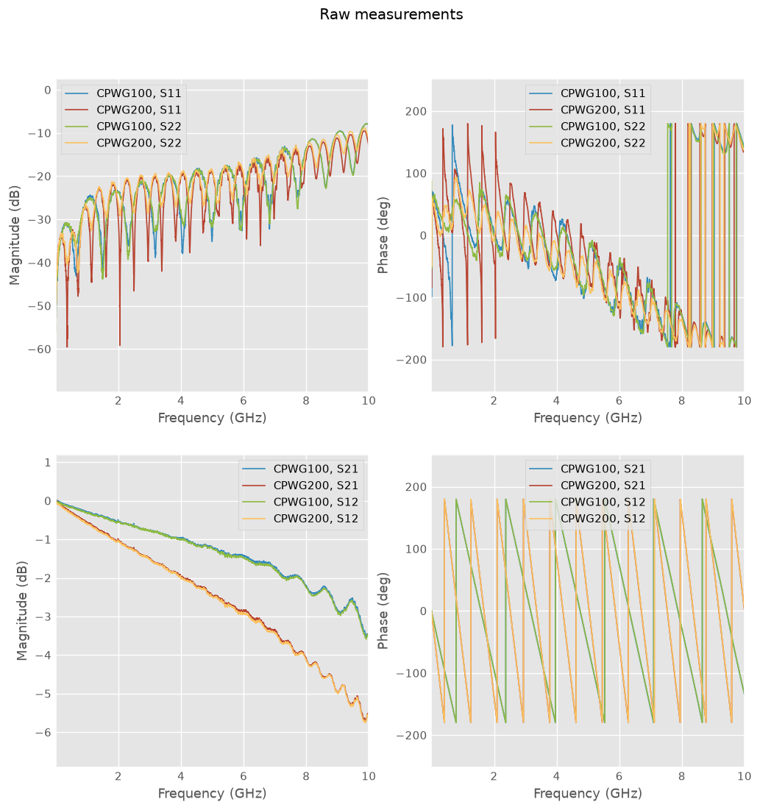
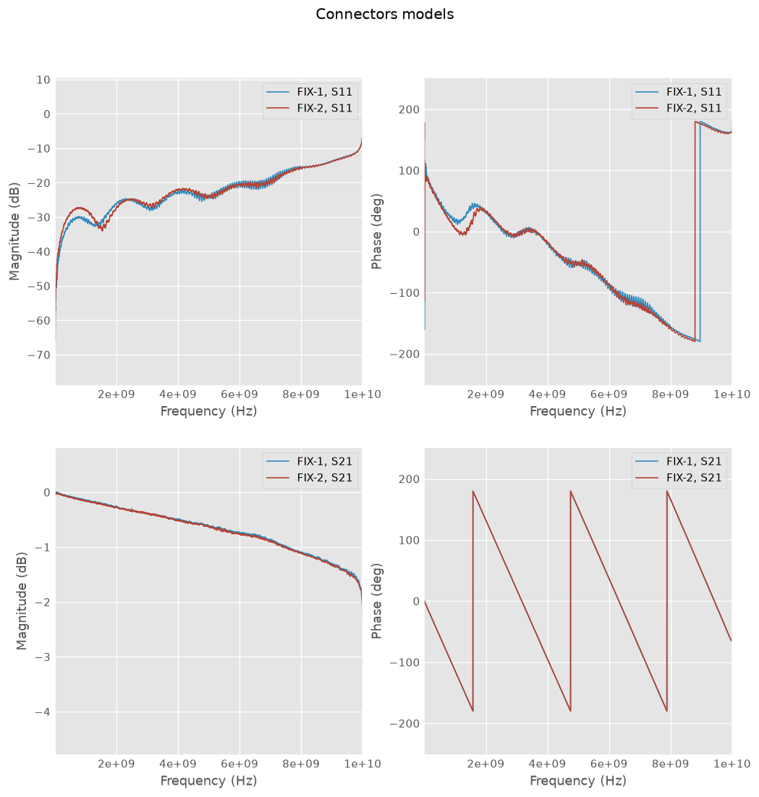
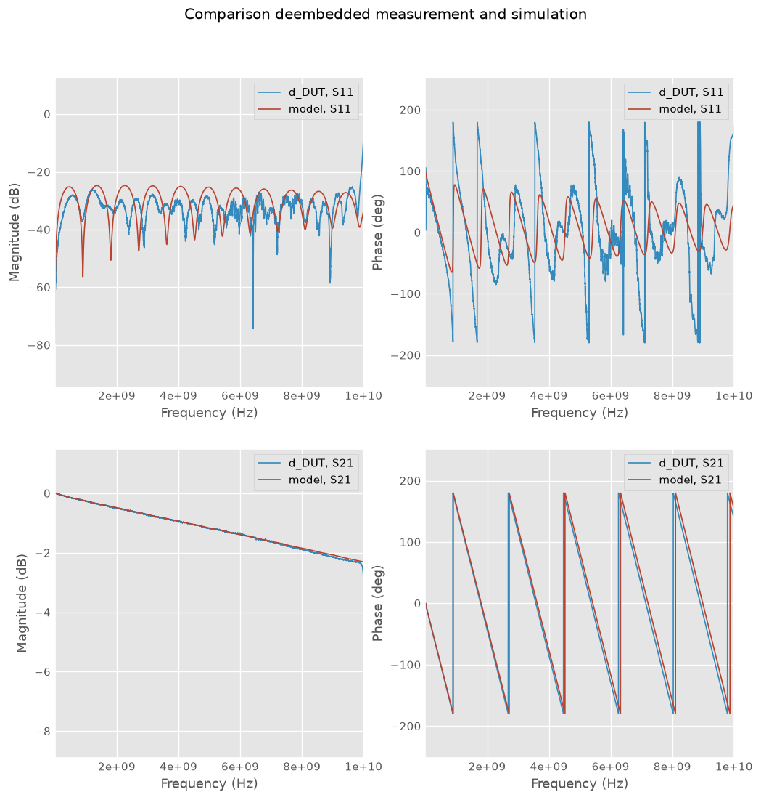
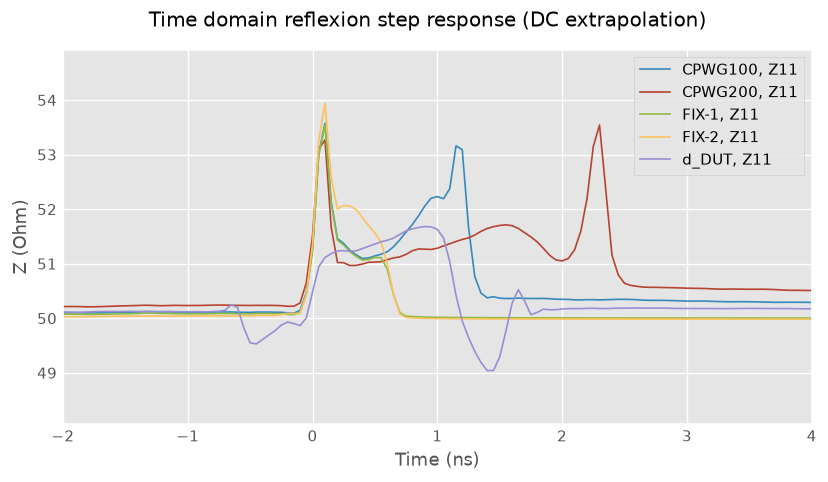

CPW media example#
A coplanar waveguide (CPW) is a planar transmission line where the return path is a plane located on both sides of a strip conductor on the same layer. The characteristic impedance depends on the strip width and the gap with the return plane, giving two degrees of freedom to the designer.
A great advantage of CPW is the convenience to perform shunts or series connections with components because both the signal and the return path are on the same side, thus no via is required. On the other hand, the large coplanar planes require a lot of area.
The coplanar waveguide has quasi-TEM mode and less dispersion than microstrip. To avoid the propagation of parasitic slotline mode, the planes on both sides of the strip have to be connected together. This could be done using air bridges on MMICs or by adding a conductor plane on the backside of the substrate and connecting all planes together with via fences.
When using conductor backing, the line could behave like a microstrip line instead, should the height of the substrate be small and the gap with coplanar planes be big.

[1]:
import matplotlib.pyplot as plt
import skrf as rf
from skrf.calibration.deembedding import IEEEP370_SE_NZC_2xThru
from skrf.media import CPW
rf.stylely()
Measurement of two CPWG lines with different lengths#
The measurement was performed on the 21st of March 2017 on an Anritsu MS46524B 20GHz Vector Network Analyser. The setup is a linear frequency sweep from 1 MHz to 10 GHz with 10’000 points. Output power is 0 dBm, IF bandwidth is 1kHz and neither averaging nor smoothing were used.
CPWGxxx is an L long, W wide, with a G wide gap to top ground, T thick copper coplanar waveguide with conductor backing on an H height substrate with top and bottom ground plane. A closely spaced vias wall is placed on both sides of the line and the top and bottom ground planes are connected by many vias.
Name |
L (mm) |
W (mm) |
G (mm) |
H (mm) |
T (um) |
Substrate |
|---|---|---|---|---|---|---|
CPW100 |
100 |
1.70 |
0.50 |
1.55 |
50 |
FR-4 |
CPW200 |
200 |
1.70 |
0.50 |
1.55 |
50 |
FR-4 |
The milling of the artwork is performed mechanically with a lateral wall of 45°. The relative permittivity of the dielectric was assumed to be approximately 4.5 for design purposes.

Looking at measurements#
We look at measurement insertion loss phase and magnitude as well as return loss phase and magnitude.
The insertion loss of CPWG200 is twice that of CPWG100 and is mostly linear up to 6 GHz. The phase shows also a factor two. Both statements agree with the fact that CPWG200 has twice the length of CPWG100.
The return loss insertion and phase have the same order of magnitude for the two networks. Insertion loss is below -20 dB at low frequency which indicates a good match of the impedance. The distance between magnitude minima is two times shorter with CPWG200 related to CPWG100, which again agrees with the physical length difference.
[2]:
# Load raw measurements
TL100 = rf.Network('CPWG100.s2p')
TL200 = rf.Network('CPWG200.s2p')
# plot them all
plt.figure(figsize=(10, 10))
plt.suptitle('Raw measurements')
plt.subplot(2, 2, 1)
TL100.plot_s_db(0, 0)
TL200.plot_s_db(0, 0)
TL100.plot_s_db(1, 1)
TL200.plot_s_db(1, 1)
plt.subplot(2, 2, 2)
TL100.plot_s_deg(0, 0)
TL200.plot_s_deg(0, 0)
TL100.plot_s_deg(1, 1)
TL200.plot_s_deg(1, 1)
plt.subplot(2, 2, 3)
TL100.plot_s_db(1, 0)
TL200.plot_s_db(1, 0)
TL100.plot_s_db(0, 1)
TL200.plot_s_db(0, 1)
plt.subplot(2, 2, 4)
TL100.plot_s_deg(1, 0)
TL200.plot_s_deg(1, 0)
TL100.plot_s_deg(0, 1)
TL200.plot_s_deg(0, 1)

Removing connectors effects#
The SMA connectors cause a discontinuity in the signal path. The waves have to go through a coaxial to planar transition with a complex three-dimensional geometry in the launch region.
By splitting the 100 mm line into two halves and deembed them from the 200 mm line, the connector and 50 mm of the line will be removed on both sides. This will remove the effects caused by the connectors.
[3]:
# deembedding using IEEEP370 impedance corrected 2xthru method
dm = IEEEP370_SE_NZC_2xThru(dummy_2xthru = TL100, name = '2xthru')
fix1 = dm.s_side1
fix1.name = 'FIX-1'
fix2 = dm.s_side2
fix2.name = 'FIX-2'
d_dut = dm.deembed(TL200)
d_dut.name = 'd_DUT'
# plot them all
plt.figure(figsize=(10, 10))
plt.suptitle('Connectors models')
plt.subplot(2, 2, 1)
fix1.plot_s_db(0, 0)
fix2.plot_s_db(0, 0)
plt.subplot(2, 2, 2)
fix1.plot_s_deg(0, 0)
fix2.plot_s_deg(0, 0)
plt.subplot(2, 2, 3)
fix1.plot_s_db(1, 0)
fix2.plot_s_db(1, 0)
plt.subplot(2, 2, 4)
fix1.plot_s_deg(1, 0)
fix2.plot_s_deg(1, 0)

Comparison of deembedded dut with CPW media results#
We now compare the results of our deembedded measurements with simulated results from CPW media.
The ep_r and tanD values are taken from the “Correlating microstripline model to measurement” notebook in the same directory.
The insertion loss agreement is very good both in phase and magnitude.
The return loss overall magnitude seems correct and indicates a good match. Return losses below -20 dB are tricky to measure because the signal becomes small. Thus we should not expect to have a good agreement on the shape here.
[4]:
ep_r = 4.421
tanD = 0.0167
cpw = CPW(frequency=d_dut.frequency, w = 1.7e-3, s = 0.5e-3, t = 50e-6, h = 1.55e-3,
ep_r = ep_r, tand = tanD, rho = 1.7e-8, z0_port = 50., has_metal_backside = True)
l = cpw.line(d = 100.0e-3, unit = 'm')
l.name = 'model'
# plot them all
plt.figure(figsize=(10, 10))
plt.suptitle('Comparison deembedded measurement and simulation')
plt.subplot(2,2,1)
d_dut.plot_s_db(0,0)
l.plot_s_db(0,0,)
plt.subplot(2,2,2)
d_dut.plot_s_deg(0,0)
l.plot_s_deg(0,0)
plt.subplot(2,2,3)
d_dut.plot_s_db(1,0)
l.plot_s_db(1,0)
plt.subplot(2,2,4)
d_dut.plot_s_deg(1,0)
l.plot_s_deg(1,0)
/home/alex/code/scikit-rf-docs/skrf/media/cpw.py:240: RuntimeWarning: Conductor loss calculation invalid for lineheight t (5e-05) < 3 * skin depth (6.56212641250373e-05)
self.alpha_conductor, self.alpha_dielectric = self.analyse_loss(

Checking deembedding#
Two basic checks can be done to ensure the consistency of the model of the sides generated by IEEEP370 2xthru algorithm.
Plot time step response of 2xthru, side1, and side2. The sides should look like the two halves of 2xthru. This is the case here. Plot time step response of fixture-dut-fixture it should have the same left and right shape than 2xthru. Here we can see a small impedance mismatch which will cause a bounce in dut shape. Plot dut and see if it looks like the middle portion of fixture-dut-fixture. Here everything seems OK outside the small bounce left and right of dut.
Looks at the residuals by deembedding two sides models from 2xthru. Residual insertion magnitude shall be ± 0.1 dB and residual insertion loss phase shall be within ± 1°. This is the case for both here on the full bandwidth.
[5]:
# compute residuals
res = dm.deembed(TL100)
res.name = 'residuals'
res.s += 1e-15 # avoid numeric singularities
# extrapolate to dc for time step
TL100_dc = TL100.extrapolate_to_dc(kind='linear')
TL200_dc = TL200.extrapolate_to_dc(kind='linear')
fix1_dc = fix1.extrapolate_to_dc(kind='cubic')
fix2_dc = fix2.extrapolate_to_dc(kind='cubic')
d_dut_dc = d_dut.extrapolate_to_dc(kind='cubic')
# plot them all
# time domain
plt.figure(figsize=(8, 4))
plt.suptitle('Time domain reflexion step response (DC extrapolation)')
TL100_dc.plot_z_time_step(0, 0)
TL200_dc.plot_z_time_step(0, 0)
fix1_dc.plot_z_time_step(0, 0)
fix2_dc.plot_z_time_step(0, 0)
d_dut_dc.plot_z_time_step(0, 0)
plt.xlim(-2, 4)
# residuals frequency domain
plt.figure(figsize=(8, 4))
plt.subplot(1, 2, 1)
res.plot_s_db(1,0)
plt.subplot(1, 2, 2)
res.plot_s_deg(1,0)


[ ]: